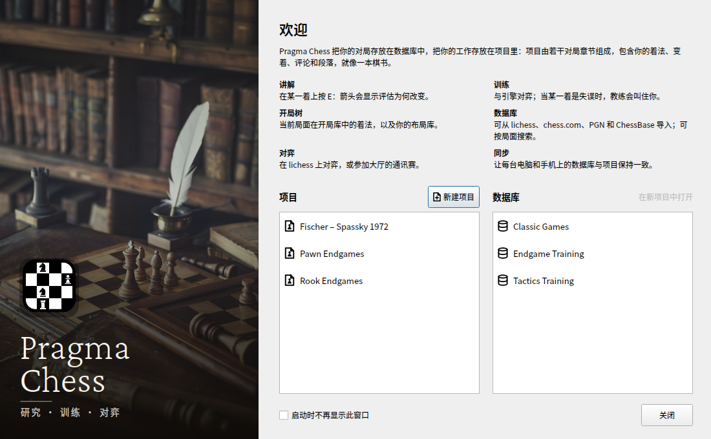

Tre lingue nuove in una settimana
Abbiamo chiesto aiuto per tradurre Pragma Chess e in una settimana parla spagnolo, russo e cinese semplificato. Un grazie a chi lo ha reso possibile.

La notte del 10 ottobre abbiamo aperto una issue su GitHub con un titolo semplice: Traduci Pragma Chess nella tua lingua. Pragma Chess parlava inglese e italiano. Speravamo che qualcuno rispondesse nel giro di qualche mese. Una settimana dopo parla cinque lingue, e non ci aspettavamo che succedesse così in fretta.
Lo spagnolo, letto da chi lo parla
La prima versione spagnola è arrivata il giorno dopo la issue, scritta da noi. Una traduzione fatta da chi non parla la lingua tutti i giorni ha sempre qualcosa di rigido, e Zeta (@zetachess) l'ha letta con l'orecchio di chi è madrelingua e l'ha fatta suonare giusta: la licenza di Qt, i messaggi del libro delle aperture, il repertorio. Piccoli ritocchi, di quelli che nota solo chi la lingua la parla.
Il russo, tutto

mrvi0 (@mrvi0) ha scritto «il russo lo prendo io» e pochi giorni dopo ha mandato tutto: ogni testo dell'interfaccia, con le tre forme del plurale che il russo vuole (1 партия, 2 партии, 5 партий), l'intera guida e questo sito. Spiega, la nostra funzione principale, è «Объяснить», la stessa parola ovunque.
Il cinese semplificato, e una buona domanda
Wait-Again (@Wait-Again) ha cominciato da una domanda, prima di scrivere una riga: la lingua va chiamata zh_CN o zh? Con zh_CN anche i pulsanti di Qt (OK, Annulla) sarebbero stati tradotti, ma forse il programma non avrebbe scelto il cinese da solo su un sistema cinese. Il dubbio era fondato: il programma confrontava solo la lingua, zh, con il nome del file, zh_CN, e non lo trovava mai. Ora è corretto: Pragma Chess cerca prima la traduzione del paese, poi una della stessa lingua scritta con la stessa scrittura, così un computer in Cina o a Singapore ha il cinese semplificato, e uno a Taiwan, che scrive con i caratteri tradizionali, non lo riceve per sbaglio. Poi è arrivata la traduzione: più di 1600 testi, l'interfaccia intera, con 讲解 per Spiega.
Grazie
Tradurre un programma è un lavoro lungo e attento, fatto per persone che non si incontreranno mai: un giocatore a Mosca, a Madrid o a Shanghai che apre Pragma Chess e lo trova nella sua lingua. A Zeta, mrvi0 e Wait-Again: grazie, davvero.
Due inviti, a loro e a chi legge. Se fai parte di un circolo di scacchi, parla di Pragma Chess al tuo circolo: è gratuito, open source, e ora parla una lingua in più. Un circolo che sostiene il progetto entra nei crediti del programma e di questo sito, con il suo logo; CLUBS.md spiega come. E se la tua lingua manca ancora, la issue #4 è aperta.